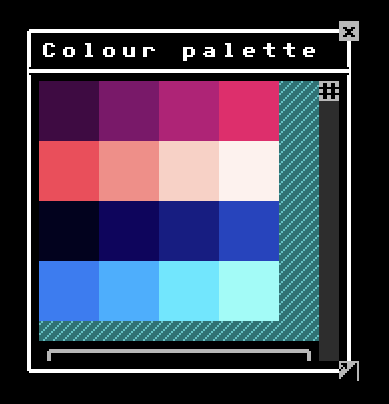

Terminal UI

The Roguelike Starterkit includes a UI system specifically for roguelikes / Terminal graphics. It is build directly on top of Indigo's UI system, but snaps everything to a terminal grid.
Please refer to the examples for usage.
Scale and the terminal grid
Indigo's UI system by default assumes you're building a UI at 1:1 scale - i.e. on a grid with a width and height of one pixel.
Because the Terminal UI is simulating an ASCII terminal, it works on a bigger grid that you decide, but that is theoretically the same size as the characters on your character sheet. In other words, everything is on a fixed grid and snaps to that grid.
This means that if you want something to appear 200 pixels across the screen, but you char sheet is a 10x10, then 200 pixels is actually grid square 20 (along the X axis).
The difference between pixel space and grid space is why the UI uses a different set of primitives, e.g. Coords instead of Point.
Mostly this is all taken care of for you, or there are facilities to help you, for example if you want to get a Point out of a Coords instance, you can do Coords(10).unsafeToPoint, but you should use Coords(10).toScreenSpace(charSheet.size).
Comments on the design
Indigo's UI system is designed to generically provide the minimum number of building blocks needed to build more complex ui systems. For example, there is no radio button primitive because you can build radio buttons out of a component list, where each entry is a component group, of a switch and a label.
Following on from that trend, there is no value in providing 'terminal' instances of all of Indigo UI's primitives, since not all of them are visually presented. For example, there is a TerminalButton because this is a visual element, but there is no 'terminal component group' because it's a layout tool, and has no visual aspect to it.
Rendering / Graphics
Being part of the Roguelike Starterkit, under the covers the Terminal UI is rendered using terminal emulators and character sheets.
To change the graphics of your UI, all you have to do is replace the appropriate characters on a sprite sheet, and feed it to the game / UI system.